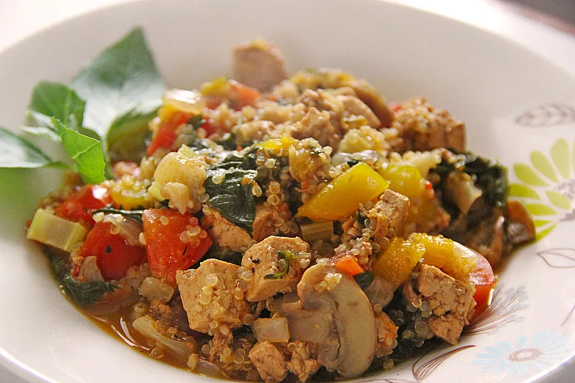

Quinoa Jambalaya

Quinoa Jambalaya ist eine kreolische Spezialität, die den traditionellen Reis durch nährstoffreiche Quinoa ersetzt. Mit würzigen Aromen von Paprika, Zwiebeln und Kräutern ist es ein herzhaftes Gericht, das sowohl für Vegetarier als auch für Fleischliebhaber geeignet ist.
Zutaten:
Bolognese:
- 200 g Tofu
- 1 EL Sojasauce
- 1 Zwiebel(n), rote
- 2 Stange/n Sellerie
- 100 g Champignons
- 1 Knoblauchzehe(n)
- 100 g Spinat
- 1 TL Basilikum
- ½ TL Thymian
- 200 g Quinoa
- 1 Dose Tomaten, stückige, ca. 400 g
- 200 ml Gemüsebrühe
- Lorbeerblatt
- Salz und Pfeffer
Zubereitung:
Tofu, Zwiebel, Paprikaschote und Sellerie würfeln. Champignons in dünne Scheiben schneiden. Knoblauch zerdrücken. Spinat hacken. Quinoa gründlich abspülen.
Tofu in Öl knusprig braun braten. Sojasauce zugeben und eine weitere Minute braten. Tofu aus der Pfanne nehmen und auf Küchenpapier abtropfen lassen.
In derselben Pfanne die Zwiebel dünsten, dann Paprika, Sellerie und Champignons zugeben und andünsten. Spinat, Knoblauch, Basilikum und Thymian zugeben und kurz mitbraten. Quinoa, Tomaten, Gemüsebrühe und Lorbeerblatt zugeben und zugedeckt 15 - 20 min garen, bis die Flüssigkeit aufgesogen ist. Lorbeerblatt entfernen. Tofu unterheben und kurz erhitzen. Abschmecken.